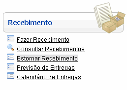
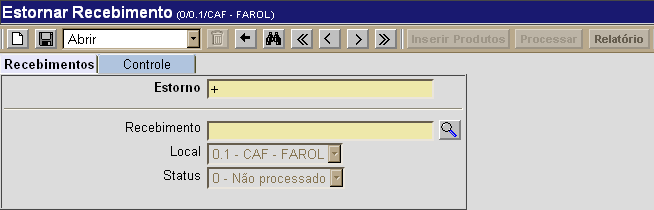
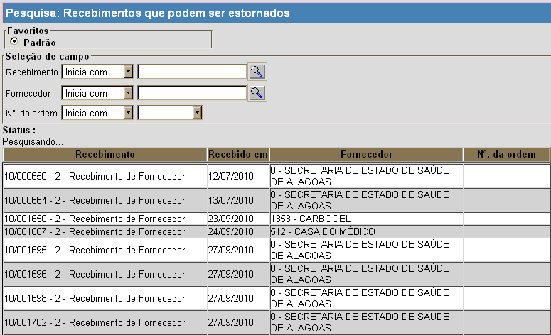
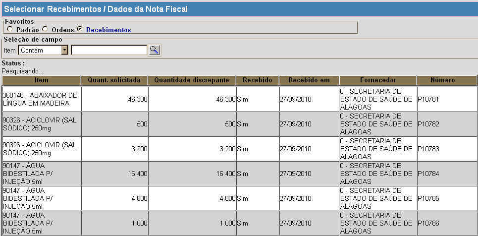
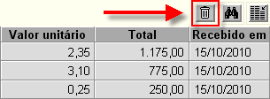

Estornar Recebimento [ Voltar ]Utilize este formulário para realizar no sistema estorno de recebimentos. O formulário "Estornar recebimento" encontra-se dentro do menu "Recebimento".
Ao clicar no formulário, o sistema abrirá a seguinte tela: 
Para estornar o recebimento de um determinado produto, siga os passos abaixo: 1° Passo: informe o número do recebimento desejado. Se necessário, clique no botão  [Procurar] para
selecionar o recebimento a partir de uma lista contendo os recebimentos
estornáveis. [Procurar] para
selecionar o recebimento a partir de uma lista contendo os recebimentos
estornáveis.Observação: apenas o recebimento mais recente de um determinado produto é passível de estorno e será exibido na tela de pesquisa de recebimentos. Logo, se o recebimento X de um produto é anterior ao recebimento Y para o mesmo produto, somente será possível selecionar e estornar o recebimento Y. 
2º
Passo: clique no botão Observação: em recebimentos efetuados com nota fiscal, somente será possível processar o estorno de todo o recebimento, isto é, não é permitido estornar apenas um dos produtos do recebimento.  Após selecionar os produtos desejados, feche a janela para voltar à tela principal do estorno. 4°
Passo: confira os produtos selecionados para o estorno e clique no
botão 
5° Passo: após salvar os dados
corretos do estorno, clique no botão |
 para salvar o estorno de
recebimento. Assim que o registro de estorno é salvo, o botão
para salvar o estorno de
recebimento. Assim que o registro de estorno é salvo, o botão  [Excluir]
da grade. Após qualquer
alteração, será necessário salvar novamente o registro de estorno.
[Excluir]
da grade. Após qualquer
alteração, será necessário salvar novamente o registro de estorno. para concluí-lo.
para concluí-lo.